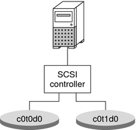

|
|||
|
1. Getting Started With Solaris Volume Manager 2. Storage Management Concepts 3. Solaris Volume Manager Overview 4. Solaris Volume Manager for Sun Cluster (Overview) 5. Configuring and Using Solaris Volume Manager (Scenario) 8. RAID-0 (Stripe and Concatenation) Volumes (Overview) 9. RAID-0 (Stripe and Concatenation) Volumes (Tasks) 10. RAID-1 (Mirror) Volumes (Overview) 11. RAID-1 (Mirror) Volumes (Tasks) 12. Soft Partitions (Overview) 16. Hot Spare Pools (Overview) 20. Maintaining Solaris Volume Manager (Tasks) 21. Best Practices for Solaris Volume Manager Using Solaris Volume Manager With Networked Storage Devices 22. Top-Down Volume Creation (Overview) 23. Top-Down Volume Creation (Tasks) 24. Monitoring and Error Reporting (Tasks) 25. Troubleshooting Solaris Volume Manager (Tasks) A. Important Solaris Volume Manager Files B. Solaris Volume Manager Quick Reference |
Deploying Small ServersDistributed computing environments, often need to deploy similar or identical servers at multiple locations. These environments include ISPs, geographically distributed sales offices, and telecommunication service providers. Servers in a distributed computing environment might provide some of the following services:
These small servers have several characteristics in common:
As a starting point, consider a NetraTM server with a single SCSI bus and two internal disks. This off-the-shelf configuration is a good starting point for distributed servers. Solaris Volume Manager could easily be used to mirror some or all of the slices, thus providing redundant storage to help guard against disk failure. See the following figure for an example of this small system configuration. Figure 21-1 Small System ConfigurationThis configuration might include mirrors for the root (/), /usr, swap, /var, and /export file systems, plus state database replicas (one per disk). As such, a failure of either side of any of the mirrors would not necessarily result in system failure. Also, up to five discrete failures could possibly be tolerated. However, the system is not sufficiently protected against disk or slice failure. A variety of potential failures could result in a complete system failure, requiring operator intervention. While this configuration does help provide some protection against catastrophic disk failure, it exposes key possible single points of failure:
A “Best Practices” approach would be to modify the configuration by adding one more controller and one more hard drive. The resulting configuration would be far more resilient. |
||
|